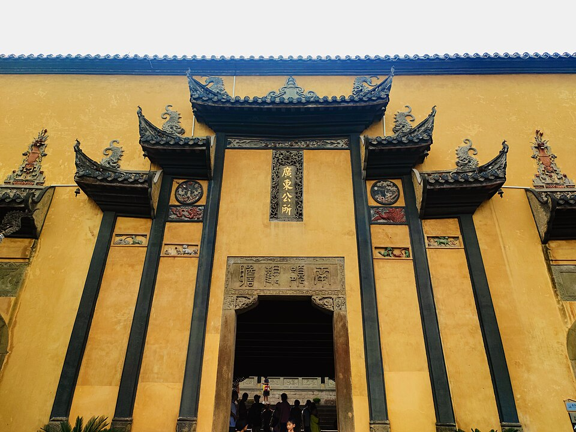
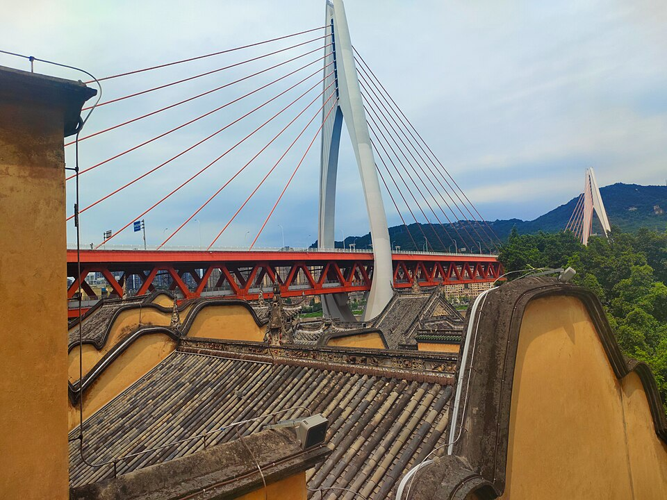
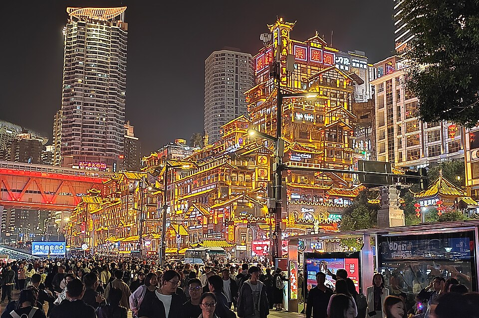
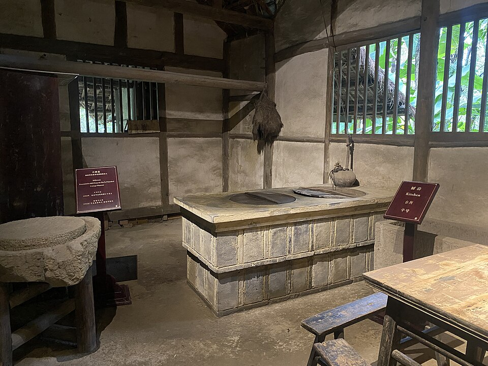
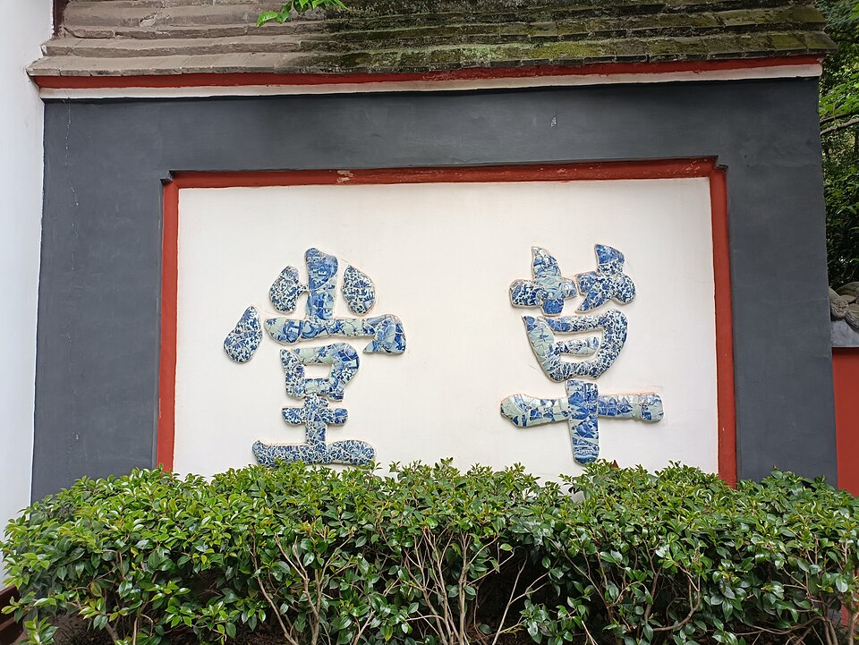
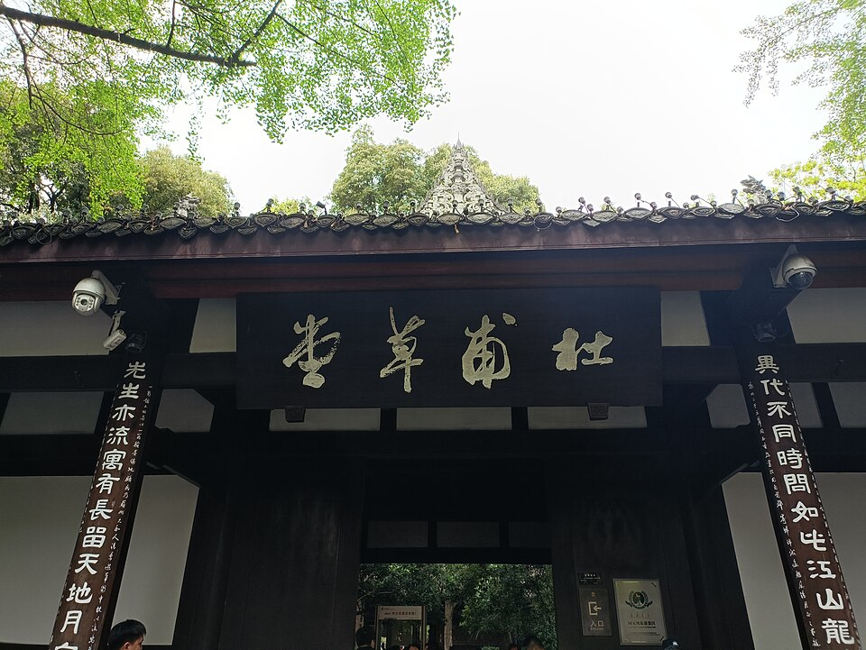
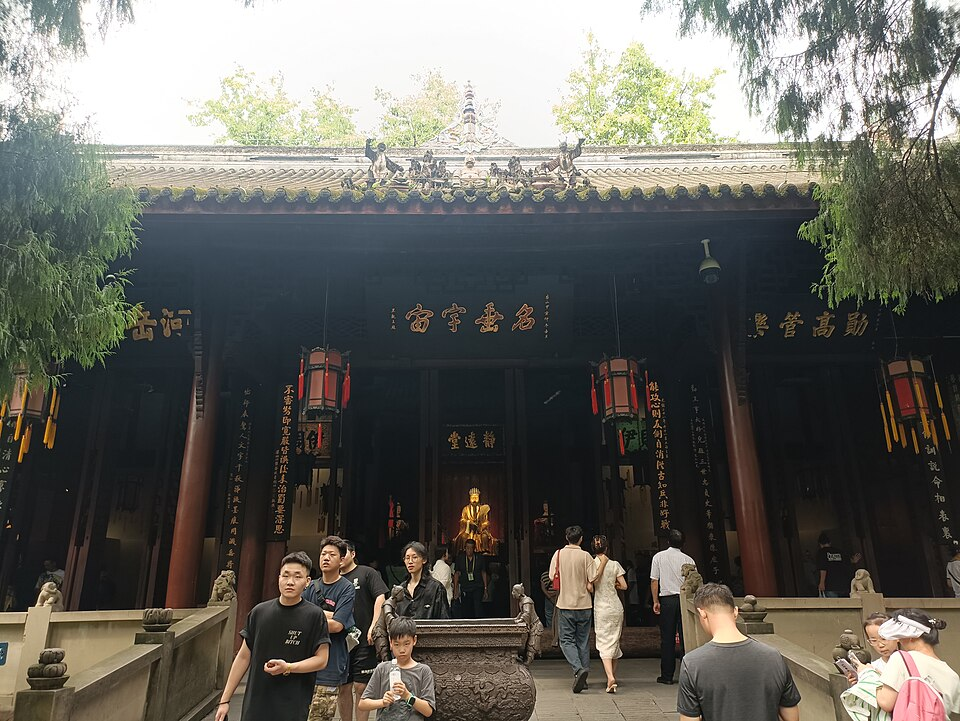
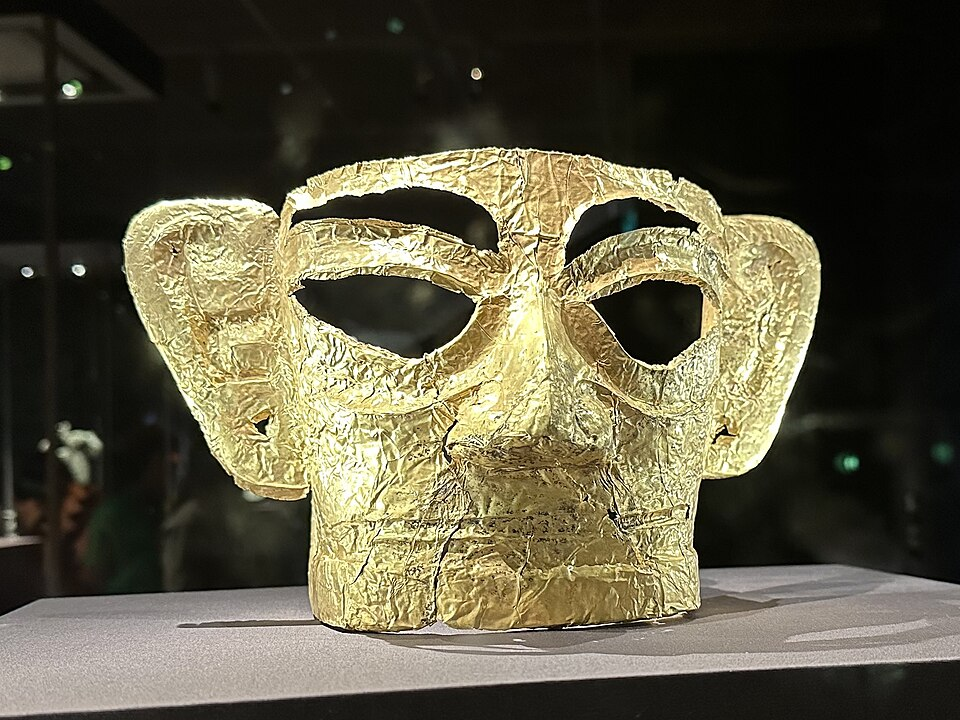
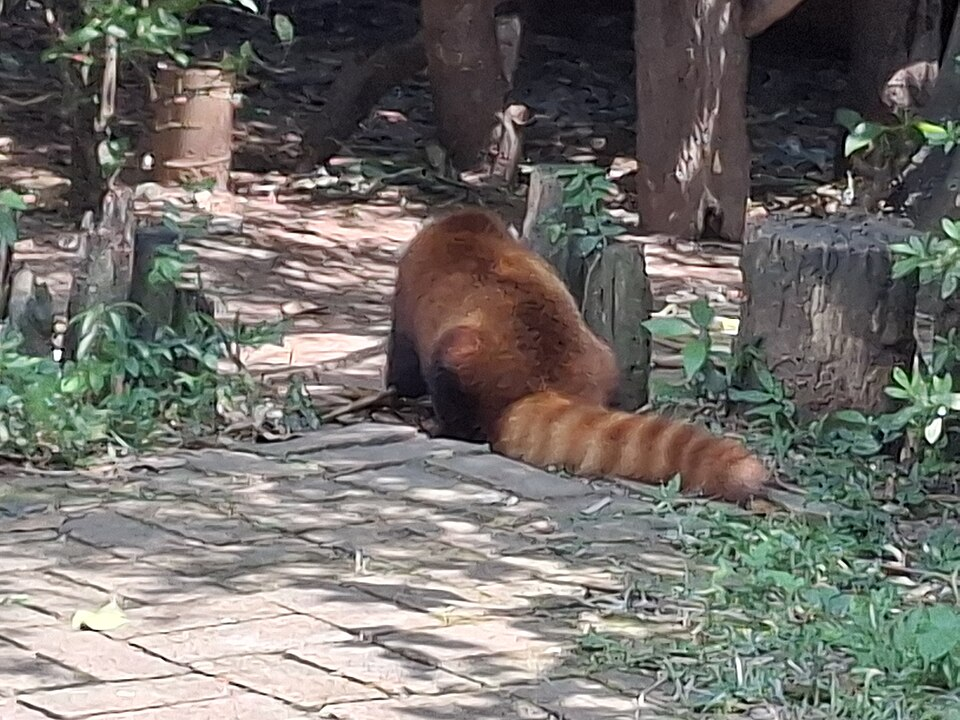

★ 兩篇以上攻略或官方都提到；單一來源 只有一篇。 大眾點評、小紅書、知乎擋爬蟲，人均多半未查到；有寫的是攜程或去哪兒的數字（2026/11 查）。點菜記得說「微辣」。
重慶
🪜 十八梯
目標
① 十八梯大隧道遺址：重慶大轟炸的防空洞，裡面有展覽 ★ ② 十八梯主街：一路下石階，兩側是餐館、小店、茶館。從上往下逛 ★：北入口（較場口那一側）進；厚慈街出、往山城巷 單一來源。
路線（09:15～10:45，步行共約 0.4 km、約 5 分）
官方導覽圖：未查到。
- 起09:15 十八梯北入口：從解放碑走過來，從上往下逛；旁邊是山城記憶館（OSM）。較場口站有十八梯出口，出來就在上方 ★（11 號出口 單一來源）
- 109:25 十八梯大隧道遺址 ★：崖壁裡的防空洞，可以進去看展覽；開放時間、收費未查到（步行約 1 分，直線，實際路徑未知）。往東約 30 m 是觀音岩，崖下供奉觀音菩薩 單一來源（不在路線上） 沒有合格照片：百度圖片搜尋 →
- 209:50 古井春：往下走經過的古井；遊記寫「井水小廣場回望山頂」單一來源，是不是同一處未證實（步行約 1 分）
- 310:05 十八梯主街 ★：一路下石階，兩側是餐館、小店、茶館；好幾家店掛「十八梯最美觀景台」招牌，爬上露台可以回望層層灰瓦與解放碑高樓 單一來源（步行約 1 分） 沒有合格照片（Commons 上合格的兩張已經用在行程卡）：看攜程遊記的照片 →
- 終10:45 厚慈街：從這裡出，經厚慈街往山城巷上端領事巷約 22 分（高德 988 m，含上坡）（步行約 2 分）。山城巷往十八梯是下行 單一來源，反過來要往上走（研判）
時刻是估算（步行用 OSRM 距離 ÷ 80 m／分，停留時間自己分配；OSRM 不算高低差）；座標取自 OpenStreetMap。
時間
- 晚上亮燈較好看 單一來源（另一篇攜程點評沒有日期）；一早人少好拍 單一來源：這趟是上午，人少
- 節假日人擠人；12/9 是週三
- 攜程點評全程 2～3 小時、Trip.com 1～3 小時；這裡排約 1.5 小時
實用
- 全年全天開放、免費（攜程）；大隧道遺址的開放時間、收費、預約：未查到
- 廁所、寄物：未查到（OSM 沒有標）
- 郵局旁有十八梯歷史沿革展覽，郵局有咖啡，可以寄明信片、蓋紀念章 單一來源（位置未查到）；小店蓋章多半要消費
- 商業化街區 單一來源；坡道多，往地鐵站那段有較長的階梯 單一來源
吃的、茶館（渝中文旅名錄，不是實測推薦；人均都未查到）
- 小吃：小滨楼·柒点坊（擔擔麵、雞絲豆腐腦，13号附3号）、豆相识豆腐脑（B7栋）、巷巷油茶（A8-2-6）
- 茶館：泰和茶馆（山城記憶館一層）、S1949茶坊（名錄稱「十八梯最美的露台」，B6栋）、幺师下山（蓋碗茶，B7栋）
- 火鍋：洞子老火锅（防空洞火鍋，B1栋）。火鍋順路才排
- 主街與厚慈街之間 OSM 有「十八梯豆花馆」（只有店名，沒有評價）
來源：攜程遊記 2024-03、去哪兒 2023-12、攜程遊記 2024-10、攜程點評、去哪兒 2024-03、騰訊新聞 2025-06、本地寶轉載渝中文旅、OpenStreetMap。筆記：1209_渝中老街攻略、1209_十八梯_園內路線
🏘️ 山城巷
目標
① 仁愛堂 ★：1900 年法國人建的教堂與醫院，醫院大部分已拆、剩塔樓（區政府）單一來源 ② 懸空棧道看長江 ★（OSM 沒標位置）。從上端的領事巷進、往下走 單一來源（另一篇攜程點評沒有日期），在中興路出來，離午餐比較近。
路線（11:00～11:50，步行共約 0.6 km、約 7 分）
官方地圖：未查到。
- 起11:00 山城步道起點（領事巷）：從十八梯厚慈街走過來約 22 分（高德 988 m，含上坡；10:45 出發約 11:07 到）。以下坡為主，但還是有上上下下（兩說：一篇寫全程下坡，另一篇 2024-10 寫還是上上下下）
- 111:10 仁愛堂 ★：二樓有拱形窗、菱形木格窗花（區政府）；西北約 50 m 是仁愛堂荒野公園，點評說免費，攜程頁面寫「今天18:00-22:00開放」，白天能不能進未查到 單一來源（步行約 3 分） 沒有合格照片：百度圖片搜尋 →
- 終11:50 山城步道終點（中興路）：一路經過懸空棧道 ★、厚廬（抗戰時期師長官邸）單一來源。也可以拍南紀門軌道大橋 單一來源。出來接步行去午餐：尘香約 22 分（高德 1.1 km）、饭江湖約 40 分（高德 2.3 km）（步行約 4 分）
時刻是估算（步行用 OSRM 距離 ÷ 80 m／分，停留時間自己分配）；座標取自 OpenStreetMap。棧道、厚廬在 OSM 上沒有標，沒畫進地圖。
時間
- 最佳時段：一篇遊記（2024-02）推薦下午 3 點左右開始，可以看落日；區政府寫晴天可以看長江、賞落日。這裡排在週三 11:00，人潮未查到（新華社 2024-10：日均人流超過兩萬人次）
- 全年全天開放（攜程，二手）
實用
- 整條巷免費的明文未查到
- 廁所、寄物：未查到
- 步道圖上的路不一定走得通（搜尋摘要）；「向上費腿，向下傷膝」，要穿好走的鞋
吃的
- 順路：白铁MAKER（咖啡，仁愛堂往南約 30 m，二樓露天江景）單一來源（2024-10，現在還有沒有開未查到）；巷子裡有「栈口店」小賣部、步道中間有老火鍋小店（區政府，沒寫店名）
- 慈记外婆桥·江景·川菜小吃(山城巷店)：山城巷47号，10:30-20:00；攜程 4.5 但只有 2 則 單一來源
- 老谢家饮食店（山城巷88号）、啥子巷巷大汤圆（山城巷52号）、弄色花厨（中兴路234号）單一來源；人均全部未查到
來源：渝中區政府、去哪兒 2024-02、攜程遊記 2024-10、攜程 仁愛堂荒野公園、渝中最重庆 2024-10、攜程 慈记、OpenStreetMap。筆記：1209_渝中老街攻略、1209_山城巷_園內路線
🏛️ 湖廣會館＋東水門大橋
目標
① 館內三大會館：禹王宮、齊安公所、廣東公所。從正門進去第一眼就是禹王宮 單一來源，公所之間靠階梯連接 單一來源 ② 從東水門大橋看會館全景 ★：會館和大橋之間有電梯 ★，出口搭電梯就能上橋 單一來源。入口位置未查到；離開時從大橋北橋頭走到小什字。
路線（13:30～15:00，步行共約 0.3 km、約 4 分）
官方園區地圖：未查到；搜狐 2024-09 攻略文末有一張「湖廣會館導覽圖」（授權不明，只放連結）。OpenStreetMap 上沒有館內各公所的點，所以館內只寫順序。
- 起13:30 湖廣會館 ★：館內順序：大門 → 移民博物館 → 禹王宮 → 渝州書院 → 廣東公所 → 齊安公所 → 雕刻博物館（兩篇攻略一致 ★；這條是「先爬坡後下坎」單一來源）。廣東公所又叫南華宮，戲台的浮雕刻的是《西遊記》《西廂記》；齊安公所的戲台保存完好 單一來源。必拍：齊安公所門口長階梯拐角的露台、館內黃牆 單一來源。地圖上的點是會館範圍的中心（入口位置未查到）

HoweyYuan・CC BY-SA 4.0・Wikimedia Commons（2024-07） - 114:40 東水門大橋：看會館全景 ★：搭電梯上橋，從人行道往下看會館（約 2 分；直線，實際路徑未知）。機位是研判：南側人行道正好經過會館北緣上方

從會館內看大橋（沒有從橋上往下拍全景的合格照片）。HoweyYuan・CC BY-SA 4.0・Wikimedia Commons（2024-07） - 終15:00 東水門大橋北橋頭：沿橋走到北橋頭（約 2 分），往小什字步行約 8 分（高德 483 m）
時刻是估算（步行用 OSRM 距離 ÷ 80 m／分，停留時間自己分配）；座標取自 OpenStreetMap。
時間
- 遊記寫館內約 2 小時 單一來源；這裡只排 70 分（13:30～14:40），時間偏緊，先看禹王宮、齊安公所、廣東公所
- 開放時間兩說：09:00–18:00、17:00 停止售票入園（大河票務 2025-07、攜程，採用）；2024 年攻略寫 09:00–22:00 夜遊、週末延一小時，現在還有沒有夜遊未查到
- 《醉巴渝》在齊安公所演，15:30、16:40 兩場、各 40 分（2024 年的攻略）；15:00 就要離開，這趟看不到；2026 年 12 月有沒有演未查到
實用
- 門票：成人 32 元 ★（2025-06 有一篇寫 25 元，舊說）；門票＋《醉巴渝》88 元，另一篇寫 68 元（兩說）
- 交通：小什字站出口兩說（7 號口或 8 號口）；7 號口出站左轉到路口、右轉到東水門橋頭，橋頭搭電梯下到橋下就是會館（約 8 分）
- 廁所：未查到；寄物：未查到
- 每週一「湖廣填四川」移民博物館閉館 單一來源；12/9 是週三，不受影響
- 冬天拍照要穿暖 單一來源
吃的、咖啡
- 順路：八省会古川菜体验馆（芭蕉园1号，和會館同一個地址）單一來源；Nogy Garden 糯吉小院（咖啡，下洪学巷42号，在會館旁）單一來源
- 不順路：東水門老街：2023-09 開街的火鍋街（桥头火锅、朝天门火锅、刘一手、老山城洞子老火锅、德庄），2025 年之後店家還在不在、人均都未查到
來源：搜狐 2024-09、搜狐 2024-12、騰訊新聞 2025-06、大河票務 2025-07、去哪兒、攜程、OpenStreetMap。筆記：1209_渝中老街攻略、1209_湖廣會館_園內路線
🧗 戴家巷崖壁步道
目標
① 中段吊腳樓觀景台：步道中段的吊腳樓觀景台，日落 17:55 前到，從棧道拍洪崖洞全景、人比較少（遊記兩篇，可信度低） ② 沿途六景：洒金陡坡、吊腳樓畔、飛仙岩石、洪崖城牆、峭壁黃葛、臨崖瞰江 ★。從上端臨江路的戴家巷口進，經中段往東，從臨江支路出（研判：OSM 有這條路，攻略沒寫到），出來就是晚餐。
路線（17:30～18:15，步行共約 0.6 km、約 7 分）
官方園區地圖：未查到。
- 起17:30 戴家巷口（臨江路）：從解放碑走來；地鐵是 2 號線臨江門（出口 A／2 號兩說）。沿戴家巷往東北走（步行約 3 分）
- 117:35 戴家巷老街（咖啡街）：GUAGUAJUN Coffee、TOTOMATO、三尺冰在 25～26 號（見下方「吃的」）；從這裡往下走崖壁步道（步行約 2 分）
- 217:45 中段吊腳樓觀景台 ★：步道是 Z 字形，往下走到中段橫貫的平台，正中心是吊腳樓觀景台 單一來源，背後是老城牆和黃葛樹。可看江北嘴 單一來源；看得到洪崖洞、千廝門大橋是 2021 年的官方報導（超過五年，參考）。待到 18:08，中間 17:55 日落（步行約 2 分） 沒有合格照片：看照片（攜程遊記）→ 百度圖片 →
- 終18:15 臨江支路（步道東側上來）：沿中段往東，走 OSM 上的小路上到臨江支路（研判，攻略沒寫到）；杨记隆府就在旁邊（OSRM 62 m，約 1 分）。走不通就原路回戴家巷老街，再走到杨记隆府（OSRM 255 m，約 3 分）
時刻是估算（步行用 OSRM 距離 ÷ 80 m／分，停留時間自己分配）；座標取自 OpenStreetMap。OSRM 不算爬坡，上下樓梯實際更久。觀景台座標是依 OSM 步道形狀研判的。不下到底部的嘉濱路：下去再上來要多爬一段，晚餐又在上方，等於折返。
時間
- 步道 24 小時開放 ★；洒金陡坡在日落時會亮起來（官方英文網）單一來源
- 2021 年春節後步道試亮燈 單一來源；2026 年每晚是否亮燈、幾點亮：未查到
- 全長約 750 m、高差約 60 m ★；從濱江入口走到老街出口最快約 8 分 單一來源
實用
- 免費；店家約 10:00–22:00（遊記兩篇，可信度低）
- 廁所：下端濱江入口有公廁 單一來源（不在本路線上）；上端、中段的廁所未查到；寄物：未查到
- 傍晚江邊風大，帶外套（遊記兩篇，可信度低）
- 休館、施工：未查到（官方 2026-08 仍列為環城牆步道的一段）
吃的、文創
- 順路（老街，人均都未查到）：GUAGUAJUN Coffee（戴家巷25号1单元1-7，門口江景、店貓）★、TOTOMATO（戴家巷25号2单元1-7）★、三尺冰·WILD BOAR CAFE（戴家巷26号2单元1-3）★
- Cliff·Cafè（24号1-3室）、PAPAYA 泰国街头小吃（24号）、崖边的盒子（13号）單一來源
- 晚餐就是下一張卡的杨记隆府，不另外吃
來源：重慶市政府英文網 2026-08、重慶市政府網 2021-01、Overseas Travel 2026-06、攜程遊記 2022-07、去哪兒 2026-06、Trip.com 2026-10。筆記：1209_戴家巷_園內路線、1209_渝中老街攻略
🌃 洪崖洞夜景
目標
① 千廝門大橋人行道：俯拍洪崖洞全景的機位 ★ ② 樓內從 11 樓逐層往下逛，全程下坡 單一來源（另一篇只有搜尋摘要）。11 樓滄白路進、11 樓滄白路出：樓內走到 1 樓，搭樓內電梯回 11 樓，最後上橋，再走回橋頭回解放碑。
路線（19:45～21:00，步行共約 1.8 km、約 22 分）
- 起19:45 11 樓滄白路入口：晚餐後從臨江支路走過來。亮燈時間是 19:30（2026-04 起的資料），19:45 到的時候應該已經亮了（研判，12 月的時間未查到）
- 樓層順序（樓內）：11 樓城市陽台 → 逐層往下逛民俗街巷 → 5 樓「重逢 1980」（自願付費）→ 4 樓美食區 → 1 樓 單一來源。5 樓「內城」沉浸式展館收費 29 或 39 元，其餘免費（摘要）單一來源。樓內沒有合格照片
- 120:20 1 樓嘉濱路（濱江路）：出來回頭看整棟亮燈，拍全景 單一來源；這裡人多 單一來源（地圖上這段是 OSRM 的戶外路徑約 4 分，實際是樓內往下走）

DvTor8303・CC0・Wikimedia Commons（2025-10） - 220:30 11 樓城市陽台：搭樓內電梯回 11 樓（11 樓與 1 樓以內部電梯、樓梯相連）；看嘉陵江與千廝門大橋（地圖上這段約 4 分，實際搭電梯）
- 320:40 千廝門大橋人行道 ★：走上橋，回頭俯看洪崖洞全景（步行約 7 分）。OSM 註記西側人行道 2025-09 起封閉 單一來源，官方公告未查到，到現場看哪一側能走

Suicasmo・CC0・Wikimedia Commons（2026-05，橋面人行道） - 終21:00 11 樓滄白路入口：走回橋頭（步行約 7 分），接著步行回飯店（洪崖洞 → 飯店約 22 分，高德）
時刻是估算（步行用 OSRM 距離 ÷ 80 m／分，停留時間自己分配）；座標取自 OpenStreetMap。
時間
- 亮燈有兩說：19:30–23:00（2026-04-15 起，洪崖洞公眾號，光明網轉述）、20:00–23:00（本地寶）；春節假期是 18:00 起（光明網 2026-02），會隨季節、節日變，12 月的時間未查到。22:30 停止入場是二手資料，未證實
- 停留：快逛 1.5～2 小時、慢逛 3～5 小時（摘要）單一來源；這裡只排 75 分，樓內以 11 → 4 樓為主
- 節假日千廝門大橋會封橋改成行人通道（2025 國慶，摘要）；12/9 是平日
實用
- 景區免費；黃牛的「快速通道」「內部票」是騙局 ★
- 預約有兩說：平日刷身份證入園（攜程筆記 2026-10）、要提前一天在官方小程序預約（新浪 2026-07，摘要）；台胞證能不能刷未查到
- 叫車不要定位 1 樓（晚上塞，又要爬坡）單一來源（另一篇只有搜尋摘要）
- 廁所：1、3、5、7、11 樓，免費 單一來源；寄物：未查到
- 千廝門大橋旁「城市陽台—洪崖洞側」6 層扶梯（上接滄白路、橋面，下接嘉濱路）2026-03 時還在施工，有沒有啟用未查到
- 小什字站出口說法不一（5A／6／9 號口），用高德確認
吃的、文創
- 順路（4 樓）：佬麻抄手（4 層百子巷，¥29，08:30–21:30）單一來源（商業推廣文）；景區裡被兩篇以上近五年攻略推薦的店未查到，價格比外面貴（低可信）單一來源
- 不順路：八一好吃街（11 樓步行可到；涼蝦、小麵、腦花，單人不到 50 元）★
- 伴手禮店：未查到
來源：攜程洪崖洞、川觀 2026-04、本地寶 2026-07、攜程遊記 2025-02、光明網 2026-03（扶梯工程）、光明網 2026-04（亮燈）。筆記：1209_洪崖洞鵝嶺攻略、1209_洪崖洞_園內路線
🛗 皇冠大扶梯
目標
① 搭扶梯下到菜園壩、再搭上來：全長 112 m、高 52.5 m、坡度 30 度，單程約 2 分 30 秒，上行、下行、備用共 3 台（澎湃 2022-05）單一來源。扶梯是單程的，要回兩路口站搭 09:40 的 1 號線，只能從上端搭下去再搭上來，這段折返省不掉（研判）。上端在兩路口站出口旁，出口號碼有兩說：4 號口（舊筆記）、3 號口（兩篇英文指南）。OSM 上 3、4 號口都緊鄰扶梯上端，研判兩個都可以，看現場指標。
路線（09:15～09:35，步行共約 0.6 km、約 7 分）
- 起09:15 高胖妹小面(两路口总店)：吃完往南走到扶梯上端（步行約 3 分）
- 109:19 扶梯上端（兩路口）：在兩路口站 3／4 號口旁；付費後搭下行梯，約 2 分 30 秒 沒有合格照片：看照片（百度圖片）→
- 209:22 扶梯下端（菜園壩）：換搭上行梯回兩路口（再付一次），約 09:28 回到上端
- 終09:35 兩路口站 4 號口：進站搭 1 號線往沙坪壩方向到鵝嶺（09:40）；站內走到 1 號線月台要多久未查到，留約 7 分緩衝
時刻是估算（步行用 OSRM 距離 ÷ 80 m／分，停留時間自己分配；上端 → 下端 → 4 號口兩段是 OSRM 沿扶梯算的距離，實際是搭乘）；扶梯與出口座標取自 OpenStreetMap，高胖妹座標由攜程換算。
時間
- 營運時間：日常 8:00–20:00（重慶交通開投集團發布，華龍網 2026-09-23）單一來源；另有 06:45–22:00（去哪兒）、06:10–22:30（英文指南）兩說。09:15 在 8:00–20:00 內。
- 12 月停駛公告：未查到。
實用
- 票價兩說：¥2／趟（travelchinaguide 2026-08、citiesinsider 英文版）、免費（citiesinsider 中文版）；官方現價未查到。預算不計。
- 付款：英文指南寫可用乘車碼（交通碼）或現金 單一來源；能不能用支付寶／微信乘車碼，第二來源未查到 → 備零錢。
- 廁所：未查到；寄物：未查到
吃的、文創
- 順路：行程已排的 高胖妹小面(两路口总店)
- 扶梯旁其他店、伴手禮：未查到
來源：光明網（華龍網）2026-09、澎湃 2022-05、travelchinaguide 2026-08、citiesinsider、chinaeducationaltours。筆記：1210_皇冠大扶梯_園內路線、1209_重慶動線、1210_重慶景點
🌉 鵝嶺棧橋 → 二廠 → 李子壩
目標
① 鵝嶺空中棧橋：懸崖上的步道，可以俯看李子壩穿樓、嘉陵江 ★ ② 瞰勝樓（兩江樓）：登樓看兩江 ★ ③ 鵝嶺二廠「愛情天台」（City Radio，《從你的全世界路過》取景）★。佛圖關公園南門旁進棧橋、鵝嶺公園爬山廊旁出 ★；棧橋單向、不能逆走 單一來源，所以順序只能是「棧橋 → 公園 → 二廠 → 李子壩」★。從瞰勝樓之後一路往下走：二廠到李子壩大約 0.5 km 降約 150 m（研判，衛星高程），大多是石階。
路線（09:55～12:25，步行共約 1.7 km、約 21 分）
- 起09:55 鵝嶺站 1 號口：出站往西走到佛圖關公園南門，約 100 m（舊點評）；地圖上約 2 分（直線，實際路徑未知）
- 110:00 棧橋入口（佛圖關公園南門旁） ★：排隊入場。入口可以現場掃碼登記 ★；持台胞證者要到遊客服務點預約 單一來源，服務點位置與當天名額未查到。入口旁有廁所（OSM）。棧橋全長 460 m，部分路段是鏤空格柵，耳機、鑰匙、手機、零錢會掉下去 單一來源 沒有合格照片：看照片 →
- 210:40 棧橋出口（鵝嶺公園爬山廊旁）：在棧橋上約 6 分路程，加上排隊、拍照共排 40 分。出棧橋就是鵝嶺公園
- 310:50 瞰勝樓（兩江樓） ★：塔底買票，沿窄螺旋石梯爬約 5～7 層 單一來源；登樓費 5～10 元與 5 元兩說，無官方值。停到 11:10；走到二廠約 8～10 分，11:20 是最晚到（步行約 4 分）

Hugo LUC・CC BY-SA 4.0・Wikimedia Commons（2025-12，「鵝嶺公園的塔上」，研判是瞰勝樓） - 411:20 鵝嶺二廠文創公園 ★：從兩江樓往東側小路下山約 8～10 分 單一來源（地圖上約 2 分，直線，實際路徑未知）。愛情天台 ★；建議停 1～2 小時 ★，這裡只排得下 45 分，12:05 從北門出 沒有合格照片：看照片 →
- 512:10 三層馬路（嘉陵新路）：北門的陡石階往下 ★。三層馬路是從李子壩站下方沿山勢一層一層往上的路，抗戰時期是別墅區 單一來源；李子壩與二廠之間走三層馬路、階梯多 ★，可以從另一側看輕軌穿樓 單一來源。哪三層各是哪條路：未查到（這個點是研判）
- 終12:25 李子壩站觀景平台入口：再往下到李子壩正街（地圖上約 2 分，直線，實際路徑未知）；二廠北門到李子壩約 15 分 ★，這裡給 20 分。旁邊是狹長的李子壩抗戰遺址公園（全天、免費，攜程、去哪兒），往西深入會折返，不排
時刻是估算（步行用 OSRM 距離 ÷ 80 m／分，停留時間自己分配；OSRM 不算爬坡，石階實際更久）；座標取自 OpenStreetMap。
時間
- 棧橋 9:00–18:00、免費（新華、本地寶）；17:40 停止入場、週一關閉（Wander in China，另一篇只有摘要）。12/10 是週四
- 週末入口排隊可能較長（Wander in China）；12/10 是平日
- 晚霞夏天較易見，其他季節多霧 單一來源；12 月重慶偏陰（研判，氣候統計）
- 二廠店家上午幾點開：未查到（部分店 21:00 關 單一來源）
實用
- 鵝嶺公園 7:00–22:00、免費（本地寶）；二廠攜程寫全年全天、免費，天台收不收費兩說，現價未查到
- 棧橋禁帶輪椅、嬰兒車、滾輪箱、無人機，禁止長時間停留、直播（新華）
- 廁所（OSM）：棧橋入口旁、瞰勝樓附近、二廠北側、李子壩觀景平台附近；寄物：未查到
吃的、文創
- 順路：二廠裡近五年被兩篇以上推薦的店未查到；攜程自動列表有大王油茶（¥27，3.3 分／8 則）、Caver·重庆精酿&老式重庆菜（¥91，4.5 分／2 則），不算攻略推薦。李子壩本身吃的少，建議到二廠吃 單一來源
來源：本地寶 2026-10、Wander in China 2026-06、新華網 2025-11、攜程遊記 2024-06、攜程遊記 2024-10、攜程二廠、攜程李子壩公園。筆記：1209_洪崖洞鵝嶺攻略、1209_重慶動線、1210_鵝嶺_園內路線
🚝 李子壩穿樓輕軌
目標
① 觀景平台拍列車從住宅樓穿出：平台面對列車穿出的開口，先對準開口、用連拍 單一來源 ② 13:30 進站，在月台看軌道進樓 單一來源，上車坐第一節車廂看穿樓 ★。從三層馬路走下來到平台，12:55 去對面的梁山雞吃午餐。
機位與時機（12:25～12:55，估算）
- 12:25 觀景平台：在街面，出站約 1 分 單一來源。出口兩說：1 號口（去哪兒 2025、新浪 2026）、B 口（B 站攻略摘要）。

TarnishedPath・CC BY-SA 4.0・Wikimedia Commons（2025-09） - 拍法：仰拍穿樓瞬間，廣角＋低角度 單一來源；不要在樓下拍，平台的視角比較好 單一來源。
- 列車約 3 分一班 單一來源（官方平峰班距未查到）；往哪個方向的車從哪一側出來：未查到。
- 12:50 離開平台 → 12:55 到梁山雞（1 號口對面）。
- 其他機位：鵝嶺棧橋可以俯看穿樓 ★（今天上午走棧橋時就能先看一次）；佛圖關崖線高處 單一來源。
只有觀景平台一個戶外點，不畫路線地圖；平台座標取自 OpenStreetMap。停留時間是自己分配的（估算）。
時間
- 最佳時段沒有一致結論：去哪兒 2025 說早上 8～10 點或傍晚 17～19 點人少，同一篇又說平日 8:30～9:30、17:30～19:00 人擠人；另有遊記說 10:00～15:00 人最多。白天拍比晚上乾淨 單一來源。
- 假日人潮：2026 五一首日李子壩全天客流超過 18 萬人次 ★；新浪寫「排隊 1 小時、拍照 5 分鐘」 單一來源。12/10 是週四平日。
- 平台順時針單循環通行 ★（開始時間兩說：2026 春節／2026 五一）；從 1 號口進、經江邊人行道離開 單一來源。12 月平日有沒有實施：未查到。
實用
- 平台免費，不要相信路邊黃牛收費帶路 單一來源；開放時段未查到（6:00～22:30 是地鐵營運時間，不是平台的時段）。
- 穿的是住宅樓：樓上住人、樓下通車，保持安靜 ★。
- 停留 20～40 分 單一來源；行程只排 30 分，含走到餐廳。
- 廁所：未查到；寄物：未查到。
吃的
- 順路：行程已排 李子坝梁山鸡（1 號口對面）。李子壩本身吃的選擇少 單一來源。
來源：gochinatravel 2026-09、去哪兒 2025-06、新浪 2026-05、鳳凰網 2026、網易 2026-08。筆記：1210_李子壩_園內路線、1209_洪崖洞鵝嶺攻略、1209_重慶動線
🏮 磁器口古鎮
目標
① 迎龍門與江邊：「紫氣東來」牌坊，下面就是嘉陵江 ★ ② 寶輪寺：免費蓋章 ★ ③ 青石板老街：日落 17:55 前逛正街。後街（地鐵站這側，人較少）進，正街出：晚餐就在正街。
路線（14:20～17:30，步行共約 1.4 km、約 17 分）
- 起14:20 後街 吊腳樓廣場：1 號線磁器口站 1 號口出 ★，先到後街。後街是新街區、像文創園，人比老街少 單一來源；地標有重慶溫度（舊煙囪改的溫度計）、吊腳樓廣場、井中天廣場、翰林橋 ★ 沒有合格照片：百度圖片搜尋 →
- 114:55 寶輪寺 ★：免費蓋章 ★；在古鎮最高處 單一來源；門票兩說（無門票：本地寶 2025；5 元：舊攻略）；開放 7:30–18:00 單一來源。沿鳳凰溪邊步道過去，途中有免費公廁（OSM）（步行約 11 分） 沒有合格照片（Commons 只有 2014 年的）：百度圖片搜尋 →
- 215:40 磁器口橫街：寶輪寺就在橫街上 單一來源；「慢生活一條街」，有咖啡、茶館，可以坐下休息 單一來源（步行約 0 分，30 m）
- 316:20 正街北端（江邊）：迎龍門、河街碼頭 ★：迎龍門兩旁有茶館 單一來源，蓋碗茶約 5 元、續水免費 單一來源。OSM 沒有標迎龍門，位置是研判（正街最靠江的一端）（步行約 3 分）

Xiumuzidiao・CC BY 4.0・Wikimedia Commons（2024-05） - 416:55 磁器口正街（往回走） ★：青石板老街，日落 17:55 前拍。麻花認「陳昌銀」或「陳建平」招牌（陳建平在正街 60 號 單一來源）（步行約 2 分）

TarnishedPath・CC BY-SA 4.0・Wikimedia Commons（2025-09，照片沒標是哪條街） - 終17:30 千年古鎮鷄雜（正街 69 號）：晚餐；茂莊（正街 78 號）在旁邊（步行約 1 分）。飯後沿正街往西南走回磁器口站（約 965 m、12 分），正街南段、金蓉門在這段路上，18:00 後開燈 單一來源
時刻是估算（步行用 OSRM 距離 ÷ 80 m／分，停留時間自己分配）；座標取自 OpenStreetMap，迎龍門、碼頭、金蓉門、寶善宮、翰林院 OSM 沒有標。江邊是死巷，從橫街口過去約 95 m 要走回來（研判）。
時間
- 人少是上午 9～11 點（二手，3 篇方向一致）；這天排在下午，所以先走人少的後街。網易 2026-09 說下午 16 點後再逛主街 單一來源
- 商鋪一般營業到 22:00 單一來源；開放時間兩說（全天／10:00–20:00），街區本身免費
實用
- 街區免費；鐘家院暫停營業（攜程 2026/11），只能看外觀
- 廁所：鳳凰溪邊步道上有免費公廁（OSM）；寄物：磁器長歌臨時遊客服務中心免費 9:00–18:00 單一來源
- 2026 年局部閉館、施工的公告：未查到（不等於確定開放）
吃的、文創
- 順路：陳昌銀麻花 ★（原味、椒鹽、麻辣、蜂蜜；「1907 年創、重慶老字號」是店家自稱）；陳建平麻花（磁器口總店） ★（冰糖糯米、椒鹽、椰奶；正街 60 號，8:00–21:00 單一來源）。⚠️ 磁器口有四家不同品牌的「陳麻花」，有的老闆不姓陳（36氪 2022）：認招牌
- 順路：茶館蓋碗茶約 5 元，迎龍門兩旁有 單一來源（沒有店名）；翰林院落座收茶費
- 早餐類，下午不一定有：大王油茶（米漿配脆饊子，不辣）單一來源
- 踩雷（旅行社文章，可信度低）：10 元 3 串烤魷魚、「手工」牛肉乾、「免費品茶」後強推茶葉、古裝拍照選片加錢；特產店比市區超市貴。沒有來源寫到「微辣」：點菜先問能不能微辣、小鍋
來源：搜狐 2024-06、攜程遊記 2024-02、重慶本地寶、36氪 2022-11、網易 2026-09、OpenStreetMap。筆記：1211_磁器口攻略、1210_磁器口_園內路線
成都
🏡 杜甫草堂
目標
① 茅屋故居 ★ ② 中軸線：工部祠、詩史堂、大廨 ★，柴門 單一來源 ③ 花徑紅牆（攜程兩篇，同一平台）到大雅堂（彩釉鑲嵌磨漆壁畫、12 尊歷代詩人雕塑）★。另外留意屋簷青苔（網友叫「瑞士卷」）單一來源。北門進、南門出 單一來源（攜程旅拍；這裡的單向走法是研判），17:00 在南門外搭計程車去玉林。
路線（15:00～17:00，步行共約 1.0 km、約 12 分）
園內地圖：官網未取得；可看 園內全景導覽圖的照片（Wikimedia Commons，2023-04），只放連結。
- 起15:00 北門：計程車在青華路 37 號下車；門口有廁所（OSM）
- 115:05 茅屋故居 ★（步行約 2 分）

瑞丽江的河水・CC BY-SA 4.0・Wikimedia Commons（2024-10，茅屋的廚房） - 215:20 盆景園（杜詩書法木刻廊） 單一來源：木刻廊在盆景園內（步行約 2 分）。OSM 上北邊有「春夜喜雨园」，杭州網寫在掛「春夜喜雨」匾的院落喝蓋碗茶 單一來源（研判是同一處） 沒有合格照片：百度圖片搜尋 →
- 315:35 少陵草堂碑亭（攜程兩篇，同一平台）：工部祠東側（步行約 2 分） 沒有合格照片：百度圖片搜尋 →
- 4·515:45 工部祠 ★、15:55 柴門 單一來源：中軸線最北端，從這裡往南走（步行各不到 1 分）

Kcx36・CC BY-SA 4.0・Wikimedia Commons（2023-04） - 616:05 詩史堂 → 大廨 ★：沿中軸線往南，兩棟相距約 30 m；東側有廁所（OSM）（步行不到 1 分）

Kcx36・CC BY-SA 4.0・Wikimedia Commons（2023-04） - 716:25 「草堂」影壁：碎瓷鑲嵌的「草堂」二字 單一來源；從這裡沿花徑（紅牆）往東（步行約 1 分，直線，實際路徑未知）

Kcx36・CC BY-SA 4.0・Wikimedia Commons（2023-04） - 816:30 大雅堂 ★：彩釉鑲嵌磨漆壁畫、12 尊歷代詩人雕塑（步行約 4 分） 沒有合格照片：百度圖片搜尋 →
- 終17:00 南門（草堂路 2 號）：門內有廁所（OSM）；約 16:50 先叫車，17:00 出門上車去玉林（車程約 30 分，玉林排 17:45，留 15 分餘裕）（步行約 1 分）

Kcx36・CC BY-SA 4.0・Wikimedia Commons（2023-04）
時刻是估算（步行用 OSRM 距離 ÷ 80 m／分，停留時間自己分配）；座標取自 OpenStreetMap。攜程旅拍（2026-10）的走法是北門 → 花徑 → 中軸線往北 → 茅屋 → 大雅堂 → 南門，會南北來回，這裡反過來單向走。唐代遺址、萬佛樓不在路線上。
時間
- 開放時間（都是攜程，官方未取得）：09:00～18:00、17:00 停止售票（或停止入園，兩說）；08:30～18:30 是 2026 中秋國慶的延時，不是冬季。15:00 進、17:00 出都在開放時間內
- 平日 15:00 後去可以避開 10:00～14:00 的人潮 單一來源
- 停留約 2 小時（攜程兩篇，同一平台）
實用
- 門票成人 ¥50 ★；實名預約，在「杜甫草堂博物館」微信公眾號提前購票 單一來源（另一篇只有摘要）；台胞證能不能刷證入園：未查到
- 導覽：攜程旅拍建議租電子講解 單一來源；2026-04 起有 AR 手持導覽機，只在南門借還 單一來源，北門進借不到。價格都未查到
- 廁所：北門旁、詩史堂・大廨東側、南門內（OSM）；寄物：未查到
吃的、文創
- 園內有茶座 ★（店名、價格未查到）；掛「春夜喜雨」匾的院落可以喝蓋碗茶 單一來源（研判在盆景園北邊）
- 不順路（北門外青華路，這條路線從南門出）：陈麻婆豆腐(旗舰店)：米其林必比登（Michelin 2026-09）；麻婆豆腐、回鍋肉、夫妻肺片；人均兩說 ¥70（攜程）／¥74（去哪兒）；青华路10号附10-12号，11:00-21:00 單一來源（偏辣，講微辣）；耀华糖果糕点铺(杜甫草堂店)：杜甫餅，人均 ¥29，青华路38号 單一來源
來源：攜程景點頁（含攜程旅拍 2026-10）、新浪旅遊 2026-06、杭州網 2026-02、攜程遊記 2023-03、搜狐 2025-12、川觀（AR 導覽）、OpenStreetMap。筆記：1211_成都市區景點攻略、1211_杜甫草堂_園內路線
⛩️ 武侯祠＋錦里
目標
① 劉備殿、諸葛亮殿：照官方路線一順著中軸往北走 ★ ② 惠陵（劉備墓）：別看完祠堂就走 單一來源 ③ 紅牆夾道：在惠陵門前兩側 ★。文物區大門進，出館往東（左轉）就是錦里 ★。
路線（入口 0 分～約 2 小時，步行共約 1.0 km、約 14 分）
官方地圖：官網參觀須知（服務設施圖）、官網導覽圖（參觀路線），授權未說明，只放連結。
- 起+0:00 文物區大門（漢昭烈廟）：上午 9 點開館就進，人少 ★；要過安檢
- 1+0:05 唐碑（三絕碑）：唐元和四年（809）立的《蜀丞相諸葛武侯祠堂碑》，文章、書法、鐫刻都好，所以叫「三絕碑」 ★（步行約 1 分）
- 2+0:15 劉備殿：劉備坐像高 3 m、全身貼金，是整座廟最高大的像；東偏殿關羽、西偏殿張飛；殿前東西廊有文臣、武將塑像 28 尊（官方）（步行約 1 分）

Kcx36・CC BY-SA 4.0・Wikimedia Commons（2023-08） - 3+0:45 諸葛亮殿：神龕裡的諸葛亮像羽扇綸巾，懸「靜遠堂」匾；兩旁是兒子諸葛瞻、孫子諸葛尚（官方）。武侯祠裡有名的「攻心聯」 ★，掛在哪一殿未查到（步行約 1 分）

Kcx36・CC BY-SA 4.0・Wikimedia Commons（2023-08） - 4+1:05 三義廟：劉關張塑像照《三國演義》塑，形象較年輕；1998 年從提督街遷建過來（官方）（步行約 2 分）
- 5+1:20 惠陵（劉備墓）：封土高 12 m、周長 180 m，由照壁、山門、神道、寢殿組成（官方）（步行約 3 分）

惠陵山門・Kcx36・CC BY-SA 4.0・Wikimedia Commons（2023-08） - 6+1:35 紅牆夾道 ★：惠陵門前兩側的紅牆青石路，牆外是竹林；清晨光線最好 單一來源；是共用通道，拍完讓開 單一來源（步行約 1 分） 沒有合格照片（Commons 只有 2017、2019 年拍的）：百度圖片搜尋 →
- 7+1:45 三國文化陳列室：官方路線一的最後一站；旁邊有廁所 ★（步行約 1 分）
- 終+2:00 錦里大門：出館往東（左轉）就到，錦里古街往北走（研判，依 OSM）（步行約 4 分）
時刻是估算（步行用 OSRM 距離 ÷ 80 m／分，停留時間自己分配，總長對齊官方路線一的 2 小時）；座標取自 OpenStreetMap，紅牆夾道借用惠陵大門的座標。
時間
- 12 月 09:00～18:00，17:00 停止入館（官網；大河票務網同，可能轉抄官網）
- 上午 9 點人少 ★（大河票務網另寫下午 4 點也人少 單一來源）；節假日正殿人多 單一來源
- 要花多久兩說：官網路線一 2 小時；攜程遊記寫武侯祠 2～3 小時、錦里 1 小時
實用
- 門票 50 元（官網）；要先在官網或官方微信線上預約購票，接近最大承載量時會限流、分時段入園（官網）；官方沒有委託任何單位在網路上賣門票、講解票；台胞證能不能在官網買全票未查到
- 10 號線武侯祠（錦里）站 A2 口，步行 3 分（官方）
- 免費導覽：微信公眾號「成都武侯祠」→ 讲解导览，中英文（官方）；地圖導覽機 20 元
- 入館要過安檢；打火機、火柴可交安檢處暫放，出館取回（官方）；寄物處未查到
- 廁所：三國文化陳列室旁 ★；官網服務設施圖另標遊客中心旁、孔明苑旁、三義廟東側
- 休館：沒查到武侯祠 2026 年的閉館公告，出發前看官網公告
- 三義廟東邊可能有門直通錦里，但出去後能不能再入館未查到，路線不走這條
吃的、文創
- 順路（錦里）：三大炮豆花铺(锦里店)：三大炮，人均 ¥11，锦里九品街10号 單一來源；張飛牛肉、牛肉豆花、傷心涼粉、糖油果子、缽缽雞 單一來源
- 錦里小吃淺嘗就好，別當正餐 單一來源；按「克」「兩」計價的先問價（官方）
- 不順路：钟水饺(武侯店)（武侯祠大街2号）：鐘水餃、甜水麵、擔擔麵，人均 ¥25（攜程）單一來源
- 錦里的茶館、咖啡、文創店名：未查到
來源：武侯祠官網導覽圖、官網票務資訊、攜程遊記 2023-03、大河票務網 2025-03、去哪兒 2026-06。筆記：0000_武侯祠_園內路線、1211_成都市區景點攻略
🍢 玉林路一帶
目標
① 玉林四巷：玉林東路街區的特色小巷，2026 年 10 月玉林咖啡節在這裡辦 單一來源 ② 小酒馆（玉林西路店） ★：1997 年老店 單一來源、酒吧駐唱 單一來源。計程車在玉林四巷下車，往西走到小酒馆，再往南走到谭家吃晚餐，不走回頭路。日落 18:02，後半段天已經黑了。
路線（17:45～18:30，步行共約 1.6 km、約 28 分（高德））
- 起17:45 玉林四巷：計程車下車。全年全天開放 單一來源。塗鴉只有 2020 年的評論提到，近五年的來源未查到 沒有合格照片：百度圖片搜尋 →
- 117:55 小酒馆（玉林西路店） ★：1997 年老店、駐唱（各 單一來源）；門牌玉林西路 55 号 單一來源；營業時間、駐唱時段、人均未查到（步行約 10 分，高德 559 m）；18:12 離開 沒有合格照片：百度圖片搜尋 →
- 終18:30 谭家(玉林一店)：玉林南路70号附1号，晚餐（步行約 18 分，高德 1 km）。店家座標取自 Michelin 頁面（研判是店址）
時刻是估算（步行用 OSRM 距離 ÷ 80 m／分，停留時間自己分配）；座標取自 OpenStreetMap（谭家取自 Michelin 頁面）。
時間
- 谭家：Michelin 寫只有晚上營業、週一休；點評寫 11:00-次日04:00（兩說）。12/11 是週五，兩說都有開
- 小酒馆幾點開門、幾點開始駐唱：未查到
實用
- 街區散步，不用門票
- 廁所、寄物：未查到
吃的、文創（出差週晚上從飯店出發也可以來）
- 王妈手撕烤兔 ★：玉林横街6号，點評人均 ¥58 單一來源
- 耍酒馆、甘食记（肥腸粉）、钟水饺（紅油水餃）單一來源（地址未查到）
- 玉洁巷：原本以鉢鉢雞出名，現在聚了精釀酒吧、舊書店 單一來源
- 小酒馆芳沁空間：2024-08 起改成白天的展覽空間，不是夜間酒吧
- 行程的馬路邊邊串串（玉林店）：攻略沒提到，但點評 4.2（11,708 則）、¥71，想吃的店照排
來源：川觀 2026-06、搜狐 2025-02、川觀 2026-10、虎嗅 2026-04、Michelin 谭家、去哪兒 玉林四巷。筆記：1211_玉林_園內路線、1212_三星堆熊貓玉林攻略、1214_成都晚餐
🗿 三星堆博物館
目標
① 新館（陳列館）：1 樓「巍然王都」的青銅大立人像、黃金面具、金杖 ★；2 樓「天地人神」的青銅神樹、縱目面具 ★ ② 修復館：隔著玻璃看修復師工作 單一來源 ③ 綜合館的文創區。從遊客中心進出（研判，驗票口確切位置未查到）。
路線（09:45～13:15，步行共約 1.6 km、約 21 分）
官方園區地圖：看 三星堆博物館官網，只放連結。
- 起09:45 遊客中心：換票、刷證入館；免費寄存 單一來源。搭公車約 10:25 才到（高德），新館少看 40 分
- 109:55 一號館（陳列館，新館） ★：由下往上看（步行約 6 分），約 2 小時 20 分（估算）
- 1 樓「世紀逐夢」：青銅扭頭跪坐人像（2021 年 4 號坑出土）單一來源
- 1 樓「巍然王都」：青銅大立人像、金面罩青銅人頭像、金杖（在展廳正中間）、黃金面具 ★。開館後遊客少的時間「也就半個多小時」，進館先衝這區 單一來源
- 搭扶梯上 2 樓「天地人神」：青銅神樹（在末段）、縱目面具、青銅大面具、神壇、騎獸頂尊人像 ★；祭山圖玉璋 單一來源。人多時可以先上 2 樓 單一來源

黃金面具・Thoslee・CC BY-SA 4.0・Wikimedia Commons（2023-09） 
青銅縱目面具・陳寅恪・CC BY-SA 4.0・Wikimedia Commons（2023-07） - 212:20 三號館（文物保護修復館）：隔著玻璃牆看修復師工作 單一來源，大螢幕播數位青銅神樹的拼合過程 單一來源；09:00～17:00（官網）（步行約 7 分）
- 312:45 綜合館（老館區的一館）：文創售賣區（盲盒、絲巾、毛絨玩具），買的東西可以在館內快遞站寄回 單一來源（步行約 3 分）。新館看超時就先略過這站，修復館 ★ 保留，13:15 前出館
- 終13:15 遊客中心：出館吃午餐；回程在門口搭計程車或 13 路公交（步行約 5 分）
時刻是估算（步行用 OSRM 距離 ÷ 80 m／分，停留時間自己分配）；座標取自 OpenStreetMap。
不排的點：祭祀坑發掘現場，官網寫「暫未開放」；祭祀台（館區裡的戶外景觀）在修復館西邊約 100 m，不是必看，去了要折返；老館的青銅館（二號館）在館區最西邊，老館現況兩說（Trip.com 2026-11 說「多用於臨時展覽或研學，核心文物已搬到新館」，搜狐 2026-04 說還能看 0.5～1 小時），不排。
時間
- 新館停留：新館 2～2.5 小時 單一來源；全程 3～4 小時（搜狐）、4～5 小時（去哪兒），兩說。這條路線新館約 2 小時 20 分
- 人潮：川觀 2026-09 報導 9/4（週五）青銅神樹、大立人展台前一直圍滿人；2026-11 有報導寫一號館外一早排長隊「已是常態」（搜尋摘要）
- 有攻略說每個展館只能進一次 單一來源：新館看完再出來
實用
- 普通票 ¥72，要實名預約（官網、微信公眾號、小程序）；12/12 的票約 12/7 20:00 放出；台胞證能不能預約未查到
- 陳列館大廳可以租語音導覽器（官網）
- 廁所：未查到；寄物：遊客中心，免費 單一來源
- 每年只有除夕閉館；12/12 是一般開放時間 08:30～18:00（推論）
吃的、文創
- 順路：「堆堆堆」咖啡，位置兩說：新館 1 樓（ourchinastory 2023-10）、新館出口和館區裡（Trip.com 2026-11）；價格未查到；館內有免費飲用水 單一來源
- 館內正餐：攻略只寫「博物館餐廳」，店名、位置都未查到 單一來源。可以帶乾糧
- 門口：四和苑（三星堆店），農家菜，地址寫「三星堆博物館右手邊對面 10 m」，09:00～20:00 單一來源。看得到的最新評論是 2022-03，現在還有沒有開未查到
- 文創：青銅面具雪糕在 2021～2023 有賣 ★，2026 還有沒有未查到；三星堆郵局可以蓋章 單一來源
來源：三星堆博物館官網、Trip.com 攻略 2026-11、新華網 2025-09（綜合館文創）、人民日報 2025-04（修復館）、gcores 2025-08、ourchinastory 2023-10、去哪兒 2024-02、Trip.com 四和苑、OpenStreetMap。筆記：1212_三星堆、1212_三星堆熊貓玉林攻略、1212_三星堆_園內路線
🐼 成都大熊貓繁育研究基地
目標
① 花花（和花）：要走南門 ★，開園就去（Trip.com 寫在 6 號別墅、去哪兒寫幼年大熊貓別墅，應是同一處） ② 太陽產房的幼年熊貓 ③ 小熊貓放養區。南大門進、南大門出，全程走路不搭觀光車。
路線（08:00～11:15，步行共約 3.5 km、約 44 分）
官方園區地圖：官網觀光車頁（附園區地圖），圖檔不能下載，只放連結。
- 起08:00 南大門：08:00 開園，刷台胞證進場後走；直走，金熊貓標識右轉下坡 單一來源沒有合格照片（Commons 只有西大門）
- 108:10 天鵝湖：湖邊左轉，看到「五號別墅」標識右轉進小路（步行約 6 分）單一來源
- 208:20 大熊貓 6 號別墅：花花：小路盡頭左轉就是排隊處（步行約 6 分）單一來源。人多時先去後面幾站，回頭再看 單一來源 沒有合格照片：看 Trip.com 文章的照片 →
- 309:10 大熊貓太陽產房：幼年熊貓（攻略寫圓潤、小狗 單一來源，12 月住客未查到）；旁邊有廁所、禮品店（步行約 2 分） 沒有合格照片：百度圖片搜尋 →
- 4·509:40 小熊貓 1 號活動場、10:05 2 號活動場：小熊貓放養區（步行約 4 分、3 分）

TarnishedPath・CC BY-SA 4.0・Wikimedia Commons（2026-09） - 610:20 大熊貓 1 號別墅：成年熊貓（攻略寫蛋烘糕、熱乾麵 單一來源，12 月住客未查到）（步行約 7 分）
- 710:45 大熊貓 7 號別墅：往回走順路（步行約 10 分）
- 終11:15 南大門：搭 408 路擺渡車回熊貓大道站（步行約 6 分）
時刻是估算（步行用 OSRM 距離 ÷ 80 m／分，停留時間自己分配）；座標取自 OpenStreetMap。
時間
- 熊貓最活躍約 07:30～09:30（二手）；冬季 08:00 才開園，所以花花排第一個
- 花花什麼時候出來兩說：Trip.com 說上午機率大、14:00 後才出來，陰天比晴天容易看到；去哪兒說約 14:00 午睡後出來見面約 3 分鐘。冬季上午看不看得到：未查到
- 西門新區人流遠低於老區 單一來源（這條路線不去新區）
實用
- 門票 ¥55，全員線上實名預約（台胞證可），12/13 約 11/29 開放；觀光車 ¥30 不用買（全程走路）
- 廁所：南大門遊客中心、太陽產房旁（OSM）；寄物：南大門遊客中心有自助寄存櫃與人工寄存，都免費（官網）
- 六號別墅區試行每週一閉館；12/13 是週日，不受影響
園內吃的、文創（官網）
- 順路：天鵝湖畔的湖畔餐廳（抄手、餃子、麵）、李山山茶事；竹韻餐廳（官網寫天鵝湖東南側，OSM 標在西側）
- 不順路：熊貓驛站（2026 初新開，近星星產房，有擔擔麵）；熊貓時光咖啡屋（位置官網沒寫）
- 文創：望月館文創店、熊貓塔熊貓書屋（約 2500 款）
- 營業時間、價格、門口吃的：未查到
來源：Trip.com、去哪兒、基地官網 餐飲購物、官網票務、遊客須知、OpenStreetMap。筆記：1212_三星堆熊貓玉林攻略、1213_熊貓基地
🏛️ 成都博物館
目標
① 2 樓 2 號展廳的鎮館之寶「一大一小」：石犀（長 3.31 m、重 8.5 噸）、經穴漆人（高 14 cm）★。官方導覽手冊寫兩件都在 2 樓這一廳，先看。② 3 樓古代篇（隋－清）。③ 5 樓皮影、木偶。從 1 樓的博物館出入口進出（導覽手冊上只標了這一個出入口）。
樓層順序（13:45～15:35，館內不做路線地圖）
官方樓層平面圖：官網 導覽手冊（2024-04）。轉載授權未查到，所以只放連結。
- 13:45 1F 出入口：安檢後直接上 2 樓
- 13:50～14:45 2F 2 號展廳 古代篇（先秦－南北朝）（樓層：官網）：石犀（研判在先秦或兩漢的段落：戰國晚期或略晚的作品，2013 年在天府廣場附近出土 單一來源）、經穴漆人（西漢，老官山漢墓出土，通體髹黑漆 單一來源）。同一廳還有寶墩遺址沙盤、裴君碑（「列備五都」）、蜀錦、畫像磚、陶俳優俑 單一來源

Yumeto・CC BY-SA 4.0・Wikimedia Commons（2025-05） - 14:45～15:05 3F 4 號展廳 古代篇（隋－清）：3 號臨展廳不排
- 15:05～15:15 4F 5／6 號展廳 近世篇、民俗篇：時間不夠就跳過
- 15:15～15:28 5F 7／8 號展廳 中國皮影博物館：皮影、木偶。皮影戲演出只有週五 19:00 單一來源，12/13 沒有
- 15:28～15:35 搭電梯回 1F → 出館：經過文創店（有蓋章本、石犀系列文創 單一來源）；出館後走到小名堂約 7 分（高德 433 m）
各層停留時間是估算（自己分配）；樓層配置依官網展覽頁與導覽手冊。不排：-1F 人與自然（動物標本，不在往上走的動線上）、1F 1 號特展廳、6F 茶舍。
時間
- 週日 09:00～17:00、16:30 停止入館（官網；開到 20:30 只有週五、六）。週一閉館
- 官網寫 14:00～16:00 是觀展高峰，這次剛好在這段時間進館
- 免費人工講解 10:30、14:30 各一場，約 1.5 小時，提前 10 分到 2 樓 2 號廳門口 單一來源。⚠️ 參加 14:30 那場會講到 16:00，接不上 15:45 的小名堂，所以不參加，改聽微信公眾號的免費語音講解 單一來源
實用
- 免費、要提前預約 ★；台胞證能不能預約：未查到
- 廁所：導覽手冊每一層都有標（官網）；寄物：在南樓寄存包裹（官網）
- 1 樓諮詢台有問詢、導覽、講解服務（官網）；語音導覽器 40 元／次、押金 200 元 單一來源
- 每層有免費章，蓋章本在 1 樓文創店買 單一來源
- 地鐵：天府廣場站西1(北)、西1(南)出口（這天從夫妻肺片走過來，不經過）
吃的、文創
- 館內：5F M-LOOP 咖啡區、6F M-LOOP 茶舍（官網導覽手冊 2024-04；現在還有沒有營業：未查到）
- 門口附近：酥小蒙牛肉饼店(天府广场店) ★：牛肉酥餅，西御街6号；人均 ¥9、07:30-20:30（攜程）單一來源；排隊幾分鐘到半小時 單一來源（人民網 2024-03）
來源：官網 參觀指南、官網 常設展覽、官網 導覽手冊、川觀新聞（光明日報 2026-03）、方志四川 2026-05、去哪兒 2025-06、攜程 酥小蒙。筆記：1211_成都市區景點攻略、1213_成都博物館_園內路線